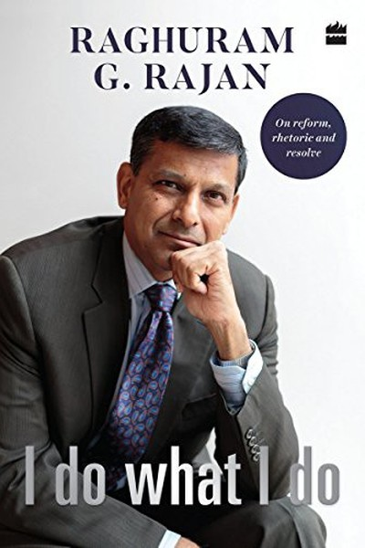

Library › Money & Finance
I Do What I Do — Summary & Key Lessons

An RBI governor's stand for truth over comfort.
📖 OPEN THE FULL INTERACTIVE BREAKDOWN →🌐 Read it in Hindi, Hinglish, Gujarati, Tamil & 22 more languages — free, with audio.
💡 The Big Idea
Raghuram Rajan — the IMF chief economist who returned to India as RBI Governor — collects his speeches from his turbulent tenure, showing what it means to make hard, unpopular decisions in public life. From fighting inflation and cleaning up India's bad-loan crisis to warning against crony capitalism, Rajan's central argument: institutions matter more than personalities — a central bank that tells uncomfortable truths, a regulator that says no to powerful friends, and an economy built on rules rather than favours. A masterclass in doing the right thing when the wrong thing is easier.
🧠 The 6 Key Lessons
Lesson 1: The Uncomfortable Truth: Central Banking Is Saying No
Part 1: The Calling
Rajan's recurring theme: the most important thing a central bank (or any honest institution) does is sometimes refuse — refuse to print money to please politicians, refuse to bless crony loans. His famous 2016 speech warned that India's growth was being 'celebrated' on borrowed numbers, and the political backlash that followed eventually led to his exit. The lesson: in any role, the value you add is often the truth you tell when a comfortable lie is available. Institutions — and careers — are built on the willingness to say no to the powerful when the numbers demand it.
📖 Example: Rajan publicly questioned India's GDP growth figures at a time when celebrating them was politically convenient — a small sentence that cost him politically but demonstrated what an independent institution is for. Read the full example →
⚡ Do this: Find one 'comfortable lie' you currently tolerate in your work or finances. State the truth about it to yourself in writing — then decide what integrity demands.
Lesson 2: Inflation Is a Tax on the Poor: Why Price Stability Matters
Part 2: The Mandate
Rajan's defence of inflation targeting: inflation is not an abstract number — it is a regressive tax that falls hardest on the poor, who can't hedge, can't invest in assets, and watch their savings evaporate. His RBI adopted a formal inflation target, signalling that price stability is the central bank's first duty. The lesson for personal finance: inflation is the silent enemy of every fixed income and every idle rupee. The saver who ignores inflation is the poor cousin of the saver who respects it. If your money isn't growing faster than inflation, it's shrinking.
📖 Example: Rajan shows how the poor, who keep savings in cash and can't access gold or property, lose most when inflation runs hot — the 'moderate' 6-8% inflation of the 2000s quietly eroded decades of household savings. Read the full example →
⚡ Do this: Calculate your personal inflation: what did your monthly basket cost a year ago vs now? Ensure your savings rate and investments at least beat that number.
Lesson 3: The Clean-Up: Why Bad Loans Must Be Named and Fixed
Part 3: The Mess
One of Rajan's biggest battles: India's banking system was sitting on a mountain of bad loans — the 'twin balance sheet' problem where banks and corporates were both broken. His solution was brutally simple and politically costly: force banks to recognize losses, force promoters to be accountable, and use the bankruptcy code to resolve rather than roll over. The lesson: every system — financial, organizational, personal — has its 'bad loans': problems rolled over instead of resolved because confronting them is painful. The organization that names its bad loans early pays a manageable price; the one that hides them pays with its future.
📖 Example: Rajan pushed banks to declare stressed assets honestly, which tanked bank stocks short-term but set the foundation for a cleaner system — the alternative, pretending loans were fine, would have produced a larger crisis later. Read the full example →
⚡ Do this: List your own 'bad loans': the debts, bad habits, toxic relationships or stalled projects you keep rolling over. Name one and start a resolution plan this week.
Lesson 4: Crony Capitalism: The Disease Beneath the Economy
Part 4: The Politics
Rajan's sharpest warning: the greatest threat to Indian growth is not socialism or foreign competition — it is crony capitalism, where business succeeds by political favour rather than competitive excellence. He documents how connected promoters got cheap loans, land and licenses while productive firms starved for capital. The lesson is universal: in any system, the fastest route to wealth is often the most corrupting — and the person who builds on favours builds on sand. The sustainable builder competes on capability, not connections, because capabilities compound while favours expire with the favour-giver.
📖 Example: Rajan describes how India's 'promoter raj' — connected industrialists borrowing from banks they influenced — created the bad-loan crisis: the loans weren't bad business, they were bad politics wearing a suit. Read the full example →
⚡ Do this: Audit your own success levers: how much is capability, how much is favour? Invest this month in one capability that makes you valuable without needing anyone's permission.
Lesson 5: The Global Indian: Think Local, Act Global
Part 5: The World
Rajan's international chapters argue that India's future is entwined with the global economy — and that the winning posture is neither isolation nor mimicry but engagement with confidence: adopt what works, adapt what doesn't, and export your strengths. He champions the 'global Indian' — professionals and firms that compete in world markets while solving local problems. The lesson: parochialism is a luxury tax. The person who studies global best practice and applies it locally compounds faster than the person who only looks inward — and the person who only looks outward loses the local edge.
📖 Example: Rajan points to how Indian software firms succeeded by mastering global standards while building local talent pools — the combination of world-class capability and domestic roots was the moat. Read the full example →
⚡ Do this: Identify the global best practice in your field. Adopt one element this quarter, adapted to your local context — and note the edge it gives you.
Lesson 6: Institutions Before Personalities: The Real Lesson
Part 6: The Legacy
The book's deepest argument: India's problems were never about this politician or that businessman — they are about institutions: courts that don't decide, regulators that don't regulate, banks that don't lend on merit. Rajan's own tenure mattered less than the institutions he strengthened. The lesson: build systems, not saviours. The leader who makes themselves indispensable has failed; the leader who builds institutions that outlast them has succeeded. Whether it's a country, a company or a family, the durable wins are structural — rules, processes and cultures that survive any single personality.
📖 Example: Rajan's legacy at the RBI — the inflation framework, the bad-loan recognition, the bankruptcy push — survived his exit because they were institutionalized, not personal. The policies outlived the politician. Read the full example →
⚡ Do this: Identify one thing in your work that depends on YOU functioning. Write it down as a process someone else could run — and document it this month.
✅ 5-Step Action Plan
- Name one comfortable lie you tolerate — and state the truth in writing.
- Check your savings/investments beat your personal inflation rate.
- Resolve one 'bad loan' — a stalled project or debt — this quarter.
- Invest in one capability that needs no one's permission.
- Document one process so the system outlasts you.
💬 Best Quotes from I Do What I Do
- “The most important thing an institution does is sometimes refuse.”
- “Inflation is a tax on the poor.”
- “Build institutions, not saviours — the systems outlast the personalities.”
Interactive version: mark lessons as read, listen in your language, share quote cards.